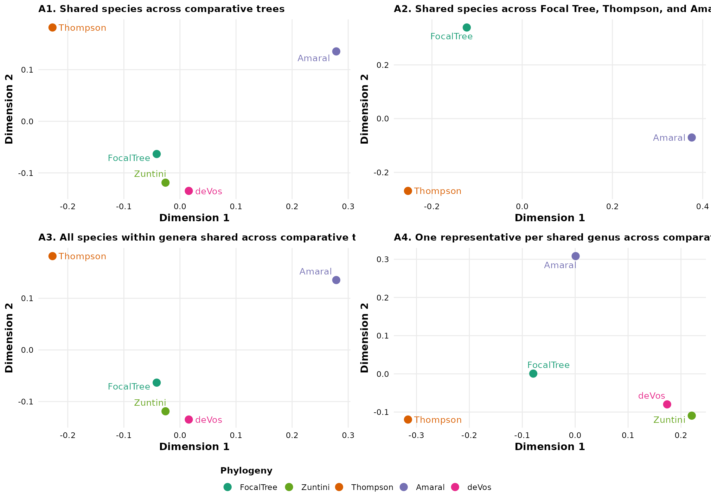

Tutorial 4: Phylogenetic Validation and Comparative Analyses
Beatriz M. Meriño
2026-09-08
Source:vignettes/tutorial-4-cactus-phylogeny-validation.Rmd
tutorial-4-cactus-phylogeny-validation.RmdAbstract
The final stage of the PhyloCactus framework evaluates
topological stability and comparative congruence between the inferred
evolutionary hypothesis and external reference backbones.
Although maximum-likelihood inference provides a statistically evaluated estimate of evolutionary relationships, the resulting supermatrix topology represents a single analytical hypothesis. In rapid plant radiations such as Cactaceae, topological recovery can be influenced by taxon sampling, locus selection, substitution model parametrization, and analytical strategy.
This module quantifies topological agreement between the focal
maximum-likelihood supermatrix tree generated by
PhyloCactus and previously published reference phylogenetic
hypotheses for Cactaceae, of which only the nuclear target-capture
dataset of de Vos et al. (2025) and Zuntini et al.
(2024) are phylogenomic in scale (hundreds of nuclear genes); the Amaral
et al. (2022) and Thompson et al. (2024) frameworks
are macroevolutionary and spatial-diversity syntheses rather than de
novo phylogenomic reconstructions. Validation employs quantitative tree
comparison metrics, including Robinson-Foulds (RF) distances, normalized
topological distances, and multidimensional scaling (MDS) tree-space
projections. These approaches establish an objective framework to
identify congruent evolutionary clades, pinpoint conflicting topologies,
and evaluate the placement of major cactus lineages across these
alternative reference datasets.
Complete Pipeline Execution Workflow
Module 13: Sub-trees and Phylogenetic Validation
Sourcing External Trees and ASTRAL-III
Reference phylogenetic hypotheses and external analytical binaries
can be supplied by the user via environment variables or local paths. To
ensure immediate, reproducible execution without mandatory external
downloads, reference topologies (Amaral et al. 2022; Thompson
et al. 2024; de Vos et al. 2025; Zuntini et
al. 2024) are distributed directly in PhyloCactus
under inst/extdata/.
The validation protocol compares the focal supermatrix topology against four representative reference frameworks: the spatial phylodiversity tree of Amaral et al. (2022; Biological Conservation, 273), the macroevolutionary chronogram of Thompson et al. (2024; Nature Communications, 15), the phylogenomic nuclear target-capture dataset of de Vos et al. (2025; Plant Systematics and Evolution, 311), and the Kew Tree of Life backbone of Zuntini et al. (2024; Nature, 629).
Gene Tree Summaries with ASTRAL-III under Multispecies
Coalescence
In multilocus and target-capture datasets, individual gene trees frequently display topological discordance. Rather than reflecting analytical noise, this discordance stems from primary biological processes, including Incomplete Lineage Sorting (ILS), reticulate evolution, ancient hybridization, and plastid capture. Because gene coalescence occurs within the bounds of ancestral species lineages, concatenated supermatrix approaches can occasionally suffer from inconsistency under high ILS.
To explicitly account for biological discordance,
PhyloCactus incorporates the summary species-tree estimator
ASTRAL-III. Operating under the multispecies coalescent
(MSC) framework, ASTRAL-III infers a species tree topology
from a collection of unrooted gene trees, minimizing deep coalescent
events. This provides a coalescent-based reference hypothesis to compare
directly against the concatenated maximum-likelihood reconstruction.
The ASTRAL-III Java executable (.jar) is
downloaded separately by the user before running the coalescent summary
workflow.
Using .Renviron to Manage Paths Safely
When dealing with personal file paths (to software like
ASTRAL-III or locally downloaded trees), it is highly
recommended to use the .Renviron file. This avoids exposing
your local machine paths on the internet or in your shared code.
# Add these lines to your ~/.Renviron file (e.g., using usethis::edit_r_environ())
# ASTRAL_PATH="/path/to/astral.5.7.8.jar"
# DEVOS_GENETREES_PATH="/path/to/QC.bestTreeCollapsed.trees"
# DEVOS_METADATA_PATH="/path/to/606_2025_1948_MOESM1_ESM.csv"
# Then access them safely in R:
astral_jar <- Sys.getenv("ASTRAL_PATH")
gene_trees_file <- Sys.getenv("DEVOS_GENETREES_PATH")
metadata_file <- Sys.getenv("DEVOS_METADATA_PATH")Standardizing Metadata and Running ASTRAL-III
Context: Why use ASTRAL-III? The study by de
Vos et al. (2025) is a phylogenomic study utilizing the
Angiosperms353 target capture kit. Because their analysis was
centered primarily at the genus level, it provides an excellent
framework for testing topological congruence against our supermatrix
approach. However, because the authors provided individual gene trees
rather than the final coalescent species tree, we must infer the species
tree using ASTRAL-III to properly account for gene tree
discordance (e.g., resulting from incomplete lineage sorting) prior to
our comparative analyses.
Using the gene trees and metadata (e.g., from de Vos et al. 2025), you can map sample names, export renamed gene trees, and infer the coalescent species tree. The resulting tree is stored directly in the tutorial validation directory:
# Target output paths in the validation directory
val_dir <- file.path(tempdir(), "10_Validation")
dir.create(val_dir, recursive = TRUE, showWarnings = FALSE)
output_tree <- file.path(val_dir, "QC.Species_tree_astral.tree")
renamed_gene_trees_file <- file.path(val_dir, "QC.Species_tree_astral_rename.tree")
# Flag controlling live ASTRAL-III execution. Default is FALSE to ensure fast,
# reproducible compilation across all build environments.
run_astral_locally <- FALSE
astral_jar <- Sys.getenv("ASTRAL_PATH")
devos_gene_trees <- Sys.getenv("DEVOS_GENETREES_PATH")
devos_metadata <- Sys.getenv("DEVOS_METADATA_PATH")
java_bin <- Sys.which("java")
if (!nzchar(java_bin) && file.exists("/opt/homebrew/opt/openjdk/bin/java")) {
java_bin <- "/opt/homebrew/opt/openjdk/bin/java"
}
if (run_astral_locally && nzchar(astral_jar) && file.exists(astral_jar) &&
nzchar(devos_gene_trees) && file.exists(devos_gene_trees) &&
nzchar(devos_metadata) && file.exists(devos_metadata) &&
nzchar(java_bin)) {
meta <- read.csv(devos_metadata, stringsAsFactors = FALSE, check.names = FALSE)
meta$species_name <- gsub(" ", "_", meta$`Scientific name`)
meta$Sample_from_tree <- stringr::str_extract(meta$`Name in tree`, "P[0-9]+")
map_sample <- setNames(meta$species_name, meta$Sample_from_tree)
map_srr <- setNames(meta$species_name, meta$`ENA run acc.`)
gene_trees <- ape::read.tree(devos_gene_trees)
rename_tips <- function(tree) {
tips <- tree$tip.label
paftol_to_sample <- function(x) {
num <- stringr::str_extract(x, "[0-9]+")
paste0("P", stringr::str_sub(num, -5))
}
sample_ids <- ifelse(stringr::str_detect(tips, "PAFTOL"), paftol_to_sample(tips), NA)
species_vec <- ifelse(stringr::str_detect(tips, "PAFTOL"), map_sample[sample_ids], map_srr[tips])
species_vec[is.na(species_vec)] <- tips[is.na(species_vec)]
tree$tip.label <- species_vec
return(tree)
}
gene_trees <- lapply(gene_trees, rename_tips)
class(gene_trees) <- "multiPhylo"
ape::write.tree(gene_trees, file = renamed_gene_trees_file)
cmd <- paste(shQuote(java_bin), "-jar", shQuote(astral_jar),
"-i", shQuote(renamed_gene_trees_file),
"-o", shQuote(output_tree), "2>/dev/null")
system(cmd)
} else {
# Deploy precalculated de Vos et al. (2025) reference tree to ensure
# the target tree file is always generated in the validation directory
ref_devos <- system.file("extdata", "reference_devos_2025_astral.tree", package = "PhyloCactus")
file.copy(ref_devos, output_tree, overwrite = TRUE)
}
#> [1] TRUEEvaluating Topological Congruence Across Alternative Hypotheses
Once external phylogenetic hypotheses have been downloaded, and new
ASTRAL-III species trees inferred, we evaluate topological
congruence against our focal maximum likelihood tree (the
treePL chronogram) and external reference trees.
Topological congruence is quantified using Robinson-Foulds (RF) distances and related tree comparison metrics. These analyses measure the number of shared and conflicting bipartitions among alternative phylogenetic hypotheses, allowing researchers to identify the degree of agreement among datasets generated under different taxon sampling schemes, molecular evidence, and inference frameworks.
For visualization of relationships among alternative hypotheses, normalized RF distances are summarized using multidimensional scaling (MDS). This ordination approach represents phylogenetic hypotheses in a reduced dimensional space, where closer positions indicate greater topological similarity and larger distances indicate stronger disagreement.
Rooting note: validate_phylogenies()
roots every tree on Leuenbergeria, which differs deliberately
from the outgroup rooting (Talinaceae and Portulacaceae) used in Module
10. Comparison requires a shared taxon set, so the function first
restricts every tree to Cactaceae, and that filter
removes the Talinaceae, Portulacaceae, and Anacampserotaceae terminals
that carry the root in the dating pipeline. Leuenbergeria is
the earliest-diverging lineage retained, which makes it the closest
available approximation to the root position the full tree imposes. The
genus is exposed as rooting_genus for datasets sampled
differently, and trees lacking it are left unrooted and flagged in
SUPP_rooting_summary. Robinson-Foulds distances are
computed on unrooted bipartitions, so this choice affects the tree-space
projection and the reported rooting summary rather than the distances
themselves.
Standardized benchmark comparison: To conduct an
objective, standardized, and honest comparative validation across
alternative evolutionary hypotheses, all comparative trees
(FocalTree, Zuntini, Thompson,
Amaral, and deVos) are loaded directly from
the validated benchmark dataset in inst/extdata/. This
approach ensures that every tree comparison uses an identical taxonomic
crosswalk without introducing methodological discrepancies between
partially executed local runs and published reference backbones.
library(PhyloCactus)
# List of collected trees: loaded from the standardized extdata benchmark suite
tree_paths <- list(
FocalTree = system.file("extdata", "phylocactus_chronogram_hpd.tree", package = "PhyloCactus"),
Zuntini = system.file("extdata", "reference_zuntini_2024.tree", package = "PhyloCactus"),
Thompson = system.file("extdata", "reference_thompson_2024.tree", package = "PhyloCactus"),
Amaral = system.file("extdata", "reference_amaral_2022.tree", package = "PhyloCactus"),
deVos = system.file("extdata", "reference_devos_2025_astral.tree", package = "PhyloCactus")
)
# Filter missing trees to allow the vignette to build even if you haven't uploaded them yet
existing_trees <- tree_paths[sapply(tree_paths, function(x) file.exists(x) && nzchar(x))]
plot_to_show <- NULL
table_to_show <- NULL
if(length(existing_trees) > 1) {
checklist_file <- system.file("extdata", "CactaceaeFullList_2026_07_01_Beatriz_Merino.xlsx", package = "PhyloCactus")
constraints_file <- system.file("extdata", "cactus_constraints.csv", package = "PhyloCactus")
# The validate_phylogenies wrapper handles tip harmonization, Robinson-Foulds/DPI distance
# calculations, and tree-space projections automatically.
validation_outputs <- validate_phylogenies(
trees_mapping_list = existing_trees,
checklist_csv = checklist_file,
constraints_map = constraints_file,
out_dir = file.path(tempdir(), "10_Validation")
)
plot_to_show <- validation_outputs$plot
dist_table <- read.csv(file.path(validation_outputs$tables, "TABLE_pairwise_tree_distances_main.csv"))
table_to_show <- head(dist_table)
} else {
message("Please upload the reference trees to inst/extdata/ to run the full validation.")
}
plot_to_show
| analysis_id | analysis_label | metric | tree_1 | tree_2 | n_common_tips | distance |
|---|---|---|---|---|---|---|
| A1_species_all4 | A1. Shared species across comparative trees | RF | Zuntini | FocalTree | 60 | 0.2105263 |
| A1_species_all4 | A1. Shared species across comparative trees | RF | Thompson | FocalTree | 60 | 0.3508772 |
| A1_species_all4 | A1. Shared species across comparative trees | RF | Amaral | FocalTree | 60 | 0.4035088 |
| A1_species_all4 | A1. Shared species across comparative trees | RF | deVos | FocalTree | 60 | 0.2280702 |
| A1_species_all4 | A1. Shared species across comparative trees | RF | Thompson | Zuntini | 60 | 0.3684211 |
| A1_species_all4 | A1. Shared species across comparative trees | RF | Amaral | Zuntini | 60 | 0.4035088 |
The resulting TABLE_pairwise_tree_distances_main.csv and
the multidimensional tree-space projections
(FIG_tree_space_main.pdf) provide a quantitative framework
for assessing topological congruence among alternative phylogenetic
hypotheses. Together, these outputs allow researchers to identify
regions of agreement and disagreement across studies, evaluate the
robustness of major clades, and determine whether differences arise from
taxon sampling, molecular marker selection, or phylogenetic inference
methodology. This comparative validation provides an objective measure
of confidence in the inferred evolutionary relationships before
downstream macroevolutionary, biogeographic, or comparative
analyses.
Conclusion
This concludes the core PhyloCactus phylogenetic
inference pipeline. Across the preceding tutorials, you have assembled a
curated multilocus supermatrix from public sequence repositories,
inferred a maximum-likelihood phylogeny, estimated divergence times
using penalized likelihood with temporal bootstrap confidence intervals,
integrated conservation metadata from the IUCN Red List, generated
publication-ready visualizations, and quantitatively validated your
phylogenetic hypothesis against alternative published backbones.
The resulting datasets (including aligned supermatrices, maximum
likelihood trees, time calibrated chronograms, species metadata tables,
conservation summaries, and comparative validation metrics) provide a
reproducible foundation for downstream analyses in macroevolution,
historical biogeography, conservation biology, community ecology, and
comparative evolutionary research. By combining automated data
acquisition, rigorous quality control, standardized phylogenetic
inference, and transparent analytical workflows,
PhyloCactus enables researchers to construct large scale
evolutionary datasets that are readily reproducible, extensible, and
suitable for publication quality comparative studies.
The next stage of the PhyloCactus workflow is intended
to evaluate the molecular diagnostic resolution of individual markers.
That section is under construction and ships no implementation: its
analytical strategy has not been defined, and the earlier routines were
withdrawn rather than left in place as working code whose output could
be mistaken for a validated result. The following tutorial is a manifest
setting out the scope of the section, the design decisions already
taken, the questions that remain open, and the criteria for reopening
it.
References
- Amaral et al. 2022. Spatial patterns of evolutionary diversity in Cactaceae show low ecological representation within protected areas. Biological Conservation, 273, 109677. https://doi.org/10.1016/j.biocon.2022.109677
- de Vos, J. M., Eggli, U., Nyffeler, R., Larridon, I., McGinnie, C., Epitawalage, N., Maurin, O., Forest, F., & Baker, W. J. 2025. Phylogenomics and classification of Cactaceae based on hundreds of nuclear genes. Plant Systematics and Evolution, 311(5), 28. https://doi.org/10.1007/s00606-025-01948-z
- Thompson et al. 2024. Identifying the multiple drivers of cactus diversification. Nature Communications, 15(1), 7114. https://doi.org/10.1038/s41467-024-51666-2
- Zuntini, A. R., Frankel, F. L., Pokorny, L., Forest, F., Baker, W. J., et al. 2024. Phylogenomics and the rise of the angiosperms. Nature, 629, 843-850. https://doi.org/10.1038/s41586-024-07324-0